Ťažba sa tu začala v 60tych rokoch počas obdobia silnejúcej socialistickej výstavby. Letecký pohľad na oblasť z hora z 12. septembra 1961 potvrdzuje túto skutočnosť:
Pohľad zhora na začiatok ťažby:

|
| letecká snímka 12. september, 1961 - začiatok ťažby |

|
| letecká snímka 12.september, 1961 s obrysom jazier |
Vznik Čunovských jazier na leteckých snímkoch
Začalo sa ťažiť v severo-západnej časti veľkého jazera. Pomalým
tempom. Zamračená Snímka zo 14.7.1964 ukazuje iba malý pokrok.

Neskôr sa tempo ťažby zrýchlilo a 23. júna 1967, už bola odkrytá južná časť malého a severná časť veľkého jazera.

V roku 1969 už vyťažené územie vyzeralo takto: (Farebne sú vyznačené priesaky podzemnej vody)
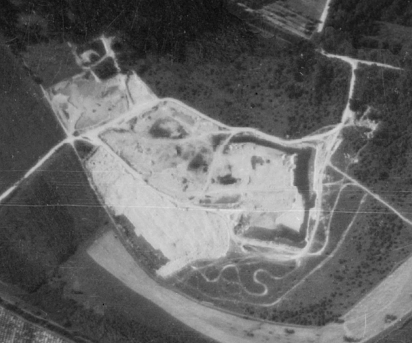
zdroj:©Historická ortofotomapa © GEODIS SLOVAKIA, s.r.o. a Historické LMS © Topografický ústav Banská Bystrica
Až v 70-tých rokoch tu postupne začali vznikať vodné plochy. V októbri 1972 a v auguste 1973 sa už začali črtať jazerá:
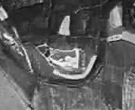


Malé jazero, južná a severná časť veľkého jazera boli postupne vybágrovné a zaplavené podzemnou vodou. Iba stredom veľkého jazera, tam kde je dnes ostrov, viedlo prepojenie. Toto sa postupne zmenšovalo (snímky z decembra 1973).
 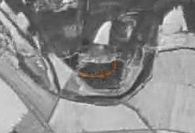
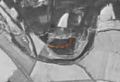
30. marca 1978 toto prepojenie už takmer zaniklo a ostal po ňom novovzniknutý ostrov.
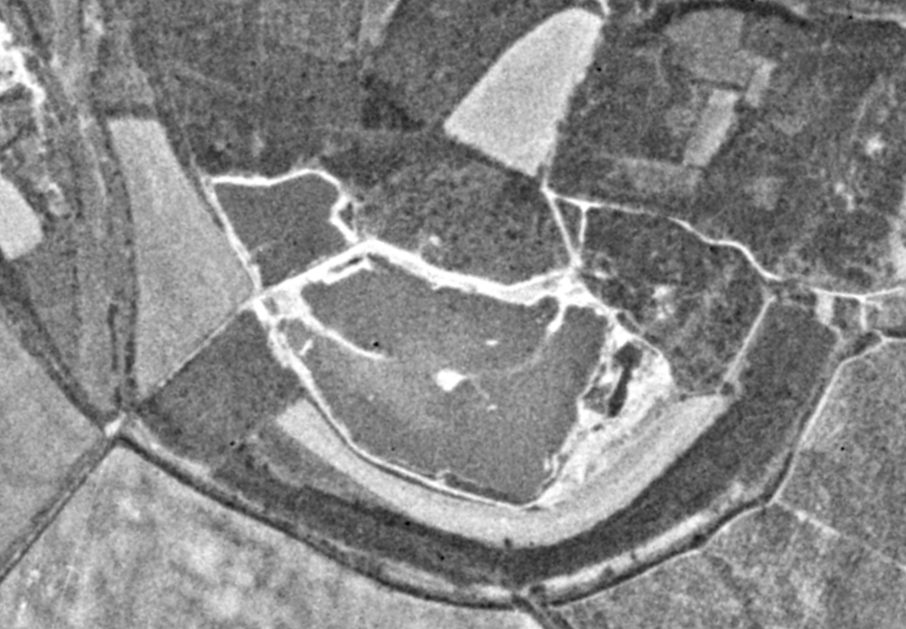
A 26. augusta 1980 má jazero vpodstate už dnešný tvar. Prepojenie úplne zaniklo a je vidno iba ostrov v strede veľkého jazera.
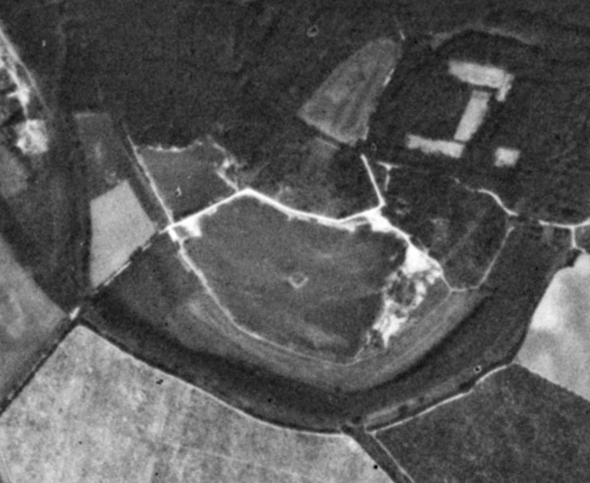
Ukončenie ťažby štrkopieskov na čunovských jazerách pravdepodobne súviselo s prieskumami a nájdením neďalekého vodného zdroja pitnej vody na Ostrovných lúčkach. Jazerá mali byť v ochrannom pásme tohoto zdroja a obava z jeho znečistenia pravdepodobne ukončila pokračovanie ťažby štrkopieskov. Jazerá sa tak ďalej nehĺbili a ostali plytšie. Po ukončení ťažby sa sem začína vracať aj príroda.
Bágrovaním jazier vznikli na ich dne rôzne kopčeky a priehlbinky. Pri pohľade z vtáčej perspektívy, najmä na veľkom jazere, vidno nádherné vrásnenie. Vidno ho najmä kvôli priezračnej a nie až tak hlbokej vode. Toto zvrásnenie je typickou črtou čunovských jazier a z výšky vytvára ich úžasný kolorit. Na satelitnej snímke z roku 2014 sa to dá pekne pozorovať. Pod vodou vidno aj zatopené prepojenie o ktorom som písal vyššie.
snímka z 28.2.2019
Copyright (c) Google Earth 2025
Neskôr sa tempo ťažby zrýchlilo a 23. júna 1967, už bola odkrytá južná časť malého a severná časť veľkého jazera.
V roku 1969 už vyťažené územie vyzeralo takto: (Farebne sú vyznačené priesaky podzemnej vody)
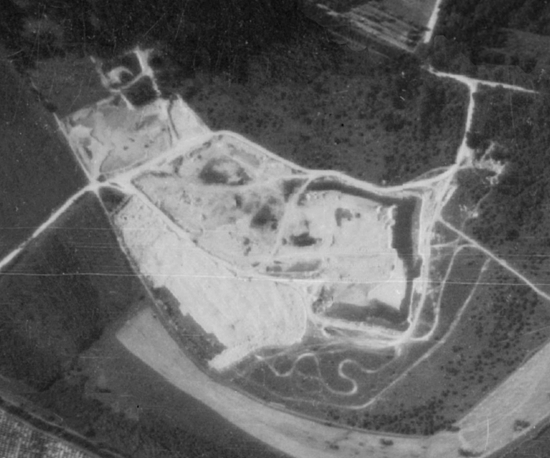
zdroj:©Historická ortofotomapa © GEODIS SLOVAKIA, s.r.o. a Historické LMS © Topografický ústav Banská Bystrica
Až v 70-tých rokoch tu postupne začali vznikať vodné plochy. V októbri 1972 a v auguste 1973 sa už začali črtať jazerá:
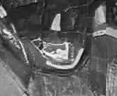
Malé jazero, južná a severná časť veľkého jazera boli postupne vybágrovné a zaplavené podzemnou vodou. Iba stredom veľkého jazera, tam kde je dnes ostrov, viedlo prepojenie. Toto sa postupne zmenšovalo (snímky z decembra 1973).
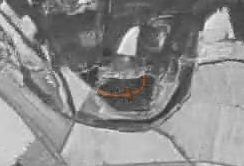
30. marca 1978 toto prepojenie už takmer zaniklo a ostal po ňom novovzniknutý ostrov.
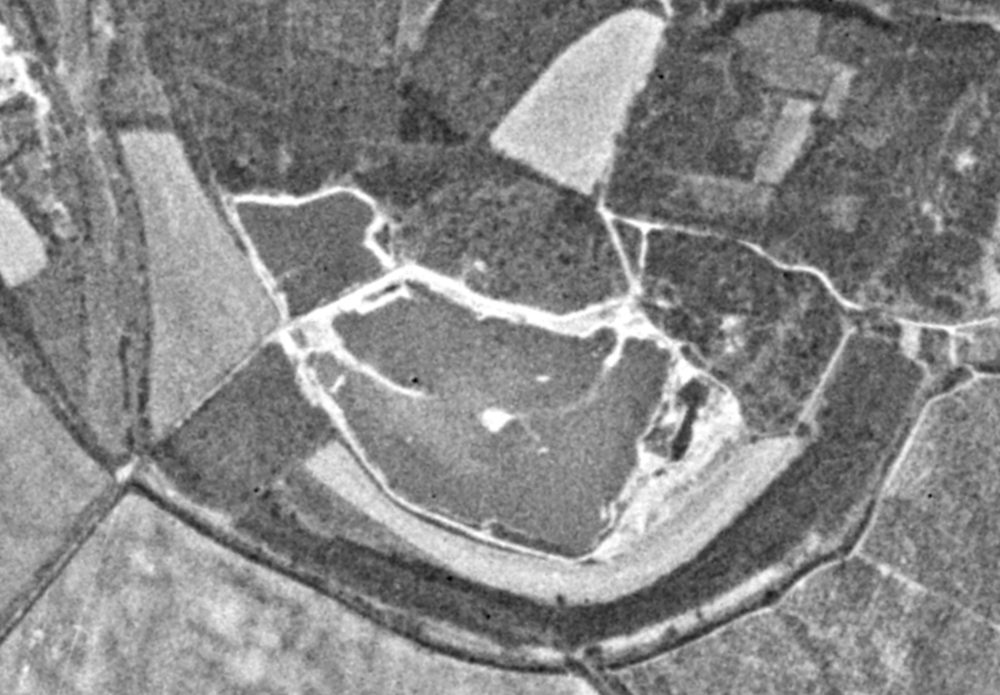
A 26. augusta 1980 má jazero vpodstate už dnešný tvar. Prepojenie úplne zaniklo a je vidno iba ostrov v strede veľkého jazera.
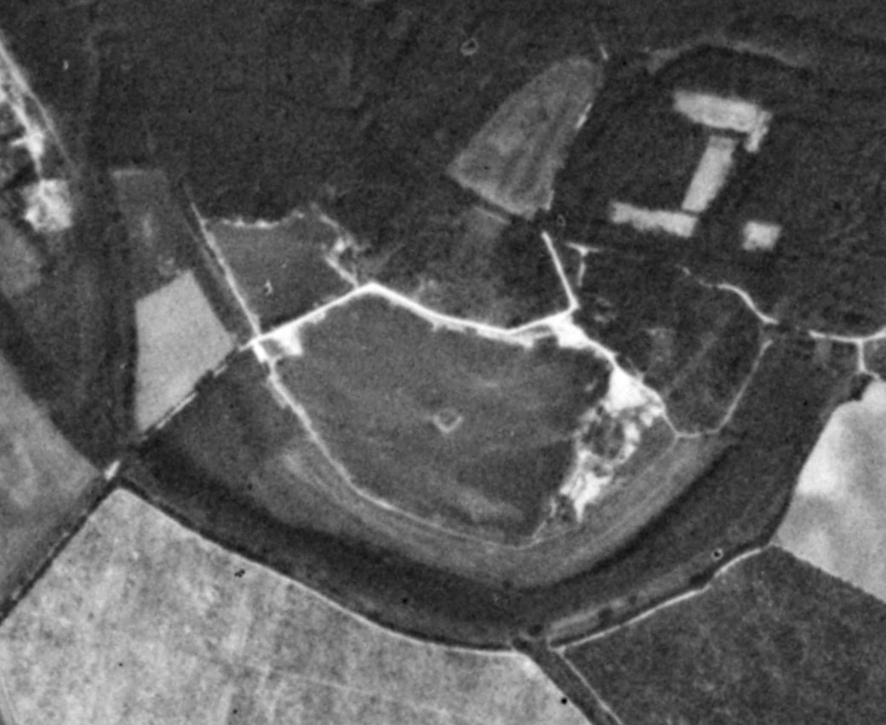
Ukončenie ťažby štrkopieskov na čunovských jazerách pravdepodobne súviselo s prieskumami a nájdením neďalekého vodného zdroja pitnej vody na Ostrovných lúčkach. Jazerá mali byť v ochrannom pásme tohoto zdroja a obava z jeho znečistenia pravdepodobne ukončila pokračovanie ťažby štrkopieskov. Jazerá sa tak ďalej nehĺbili a ostali plytšie. Po ukončení ťažby sa sem začína vracať aj príroda.
Bágrovaním jazier vznikli na ich dne rôzne kopčeky a priehlbinky. Pri pohľade z vtáčej perspektívy, najmä na veľkom jazere, vidno nádherné vrásnenie. Vidno ho najmä kvôli priezračnej a nie až tak hlbokej vode. Toto zvrásnenie je typickou črtou čunovských jazier a z výšky vytvára ich úžasný kolorit. Na satelitnej snímke z roku 2014 sa to dá pekne pozorovať. Pod vodou vidno aj zatopené prepojenie o ktorom som písal vyššie.
snímka z 28.2.2019
Copyright (c) Google Earth 2025
Ako už bolo spomenuté vyššie. Lúky medzi Rusovcami a Čunovom ponúkali perfektné ťažobné podmienky - hojnosť kvalitných štrkopieskov, blízkosť pri Bratislave s vybudovanou infraštruktúrou. Navyše na tamojších lúkach štrkopiesky dosahovali až k povrchu a nebola tu orná pôda ktorú by trebalo odkryť a zachovať. A tak ťažobný podnik, ktorý tu začal ťažiť mal nižšie počiatočné náklady.
V tom čase bol dopyt po kvalitných štrkopieskoch veľmi veľký a na ich predaji sa dalo dobre zarobiť. Niektoré jednotné roľnícke družstvá JRD to využívali a ťažbu štrku zavádzali vrámci svojej pridruženej výroby - prác a služieb mimo poľnohospodárskej činnosti. Častokrát však ťažbu zriaďovali na svojich poliach a tak ubúdala aj vzácna orná pôda.
14.09.1974 - Pôda najcennejšie národné bohatstvo
autor: -
zdroj: Rozhlas a Televízia č.38
Slovensko rastie navidomoči. No to všetko čo sa dvíha ustavične do výšav, čo sa rozrastá po širočizných rovinách zanecháva i stopy. Také ktoré si každý ani neuvedomuje. Koľko nám ubúda napr. veľmi kvalitne úrodnej pôdy. Koľko pôdy, ktorá kedysi dávala hojné úrody leží napr. na Považí ľadom.
Prečo?
Jednoducho preto, lebo po dokončení vodných diel investori pozabudli na zákonné opatrenia, ktoré im ukladajú zdevastovanú pôdu vrátiť poľnohospodárskej výrobe. Dve tisícky hektárov bývalej veľmi úrodnej pôdy nedáva nijakú úrodu.
Koľko by to bolo mäsa, masti, mlieka, masla. Za posledných päť rokov ubudlo na Slovensku bezmála 80 tisíc ha poľnohospodárskej pôdy, z toho do 20 tisíc ha ornej. Napríklad len zastavaním pre priemyselnú a individuálnu výstavbu sa takrečeno stratilo 8 tisíc hektárov kvalitnej ornej pôdy.
Veľké plochy boli zničené devastáciou pri Investičnej výstavbe, pri ťažbe štrkov, pieskov, tehliarskej hliny a pod. Nad takýmto počínaním rôznych podnikov a organizácii sa poľnohospodári oprávnene pohoršujú. Každý chápe, že potrebujeme štrk a piesok. Tehla je prepotrebná pre stále rastúcu výstavbu.
Otázne je však, ako sa to robí. Zaberajú sa neprimerane veľké plochy, neťaží sa dostatočne do hlbky a vyťažené plochy zostávajú v dezolátnom stave. Zástupcovia napr. Západoslovenských kameňolomov a štrkopieskov síce hovoria, že pôdu po vyťažení zrekultivujú.
Skutočnosť je však podstatne odlišná. Mnohým podnikom a organizáciám najmä však Pozemným stavbám prichodí pripomenúť, že by bolo možno značné množstvá štrku a piesku získavať z tokov našich riek napr. z Dunaja ročne až dva milióny kubíkov. K tomu sú však potrebné výkonné bagrovacie súpravy, bolo by treba vybudovať nákladištia, komunikácie a iné.
Pravda na rovine napr. senecké bagrovisko je to predsa pohodlnejšie, ľahšie za minimálnych nákladov. Ani niektoré poľnohospodárske závody nemajú pri zaberaní ornej pôdy vždy čisté svedomie. Napr. družstevníci v obci Sokolce okr. Komárno si zakúpili kvôli fažbe štrkopieskov vysokovýkonný nemecký bager a namiesto toho, aby päť veľkých jám na černozemi zúrodnili, budú ťažiť štrk a piesok. Takejto pridruženej výrobe na 20 ha černozeme možno odporučiť iba zmenu firemnej tabule JRD nahradiť ju tabuľou Stavebný podnik.
Orná pôda je naše najcennejšie národné bohatstvo Máme Jej nateraz v republike iba 38 árov na obyvateľa. Ak by sa takto postupovalo ďalej, čoskoro by sa nám to vypomstilo. Hospodárenie s pôdou sa preto musí stať nevyhnutnou záležitosťou nielen pracujúcich v poľnohospodárstve, ale všetkého ľudu, celej našej verejnosti.
Bližšie k týmto otázkam pohovoríme v Roľníckej besede o 13:00 hod.
K relácii o 13 00 hod
zdroj: Rozhlas a Televízia č.38
Slovensko rastie navidomoči. No to všetko čo sa dvíha ustavične do výšav, čo sa rozrastá po širočizných rovinách zanecháva i stopy. Také ktoré si každý ani neuvedomuje. Koľko nám ubúda napr. veľmi kvalitne úrodnej pôdy. Koľko pôdy, ktorá kedysi dávala hojné úrody leží napr. na Považí ľadom.
Prečo?
Jednoducho preto, lebo po dokončení vodných diel investori pozabudli na zákonné opatrenia, ktoré im ukladajú zdevastovanú pôdu vrátiť poľnohospodárskej výrobe. Dve tisícky hektárov bývalej veľmi úrodnej pôdy nedáva nijakú úrodu.
Koľko by to bolo mäsa, masti, mlieka, masla. Za posledných päť rokov ubudlo na Slovensku bezmála 80 tisíc ha poľnohospodárskej pôdy, z toho do 20 tisíc ha ornej. Napríklad len zastavaním pre priemyselnú a individuálnu výstavbu sa takrečeno stratilo 8 tisíc hektárov kvalitnej ornej pôdy.
Veľké plochy boli zničené devastáciou pri Investičnej výstavbe, pri ťažbe štrkov, pieskov, tehliarskej hliny a pod. Nad takýmto počínaním rôznych podnikov a organizácii sa poľnohospodári oprávnene pohoršujú. Každý chápe, že potrebujeme štrk a piesok. Tehla je prepotrebná pre stále rastúcu výstavbu.
Otázne je však, ako sa to robí. Zaberajú sa neprimerane veľké plochy, neťaží sa dostatočne do hlbky a vyťažené plochy zostávajú v dezolátnom stave. Zástupcovia napr. Západoslovenských kameňolomov a štrkopieskov síce hovoria, že pôdu po vyťažení zrekultivujú.
Skutočnosť je však podstatne odlišná. Mnohým podnikom a organizáciám najmä však Pozemným stavbám prichodí pripomenúť, že by bolo možno značné množstvá štrku a piesku získavať z tokov našich riek napr. z Dunaja ročne až dva milióny kubíkov. K tomu sú však potrebné výkonné bagrovacie súpravy, bolo by treba vybudovať nákladištia, komunikácie a iné.
Pravda na rovine napr. senecké bagrovisko je to predsa pohodlnejšie, ľahšie za minimálnych nákladov. Ani niektoré poľnohospodárske závody nemajú pri zaberaní ornej pôdy vždy čisté svedomie. Napr. družstevníci v obci Sokolce okr. Komárno si zakúpili kvôli fažbe štrkopieskov vysokovýkonný nemecký bager a namiesto toho, aby päť veľkých jám na černozemi zúrodnili, budú ťažiť štrk a piesok. Takejto pridruženej výrobe na 20 ha černozeme možno odporučiť iba zmenu firemnej tabule JRD nahradiť ju tabuľou Stavebný podnik.
Orná pôda je naše najcennejšie národné bohatstvo Máme Jej nateraz v republike iba 38 árov na obyvateľa. Ak by sa takto postupovalo ďalej, čoskoro by sa nám to vypomstilo. Hospodárenie s pôdou sa preto musí stať nevyhnutnou záležitosťou nielen pracujúcich v poľnohospodárstve, ale všetkého ľudu, celej našej verejnosti.
Bližšie k týmto otázkam pohovoríme v Roľníckej besede o 13:00 hod.
K relácii o 13 00 hod